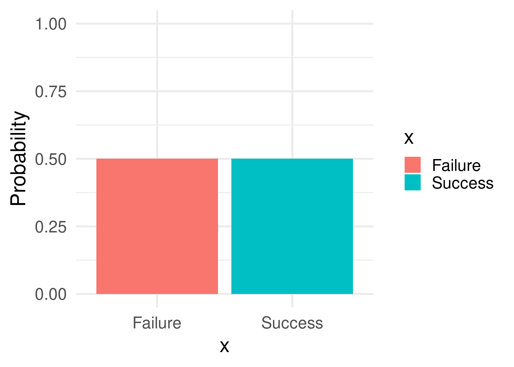
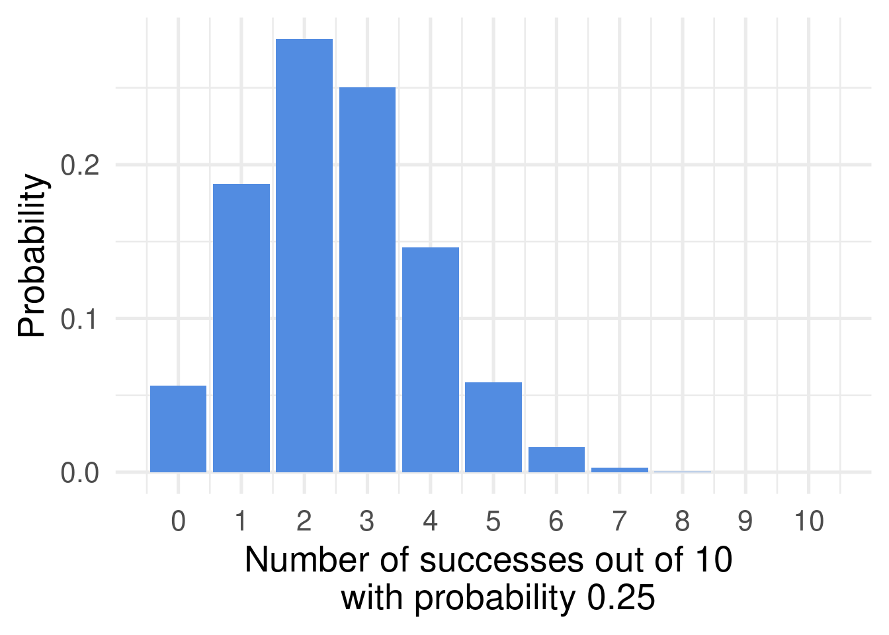

Distributions:
Distributions are ways to describe how a phenomena behaves. I.e. how does flipping a coin behave? Rolling a die? How does height in a population behave? How does radioactive waste decay? Although phenomena can seems unrelated a lot of them behave similarly. The result of a coinflip follows the same kind distribution as the result of any other binary outcome. A list and representation of some of the most common distributions can be seen underneath. In the github page for this section you can find a bunch of Shiny-apps where you can interactively change parameters of the distributions so download that if you want. Another concept is central to the understanding of distributions. Support. Finite support is when a distribution has a finite number of outcomes. Infinite support distributions is when there is an infinite amount of outcomes.
Discrete distribution:
Discrete distributions are associated with discrete data. Data that falls within distinct categories. The most basic discrete probability distribution is the bernoulli distribution.
With finite support:
The bernoulli:

The Bernoulli distribution is so simple we often don’t even consider it a distribution. The bernoulli distribution describes two outcomes. I.e. Flipping a coin. This is done one time. It does so with a particular a particular probability. It is probably the distribution that makes the most intuitive sense, without actually making sense as a distriribution. I think this is because distributions are usually considered to describe an array of outputs, not just two values. This can be illustrated by the following app. for the Bernoulli distribution the only parameter that changes is p. The probability density function is:
\[f(k;p) = Prob(X = k) = p^k(1-p)^{1-k} \: \: \: \: for \: k \: in \: \{0,1\}\]
The Binomial:

The binomial distribution is based on the bernoulli distribution. More specifically it describes the probability of getting a specific number of successes out of N independent bernoulli trials. The formula the density function of a binomial distribution is:
\[f(k, n, p) = Prob(X = k) = \binom{n}{k} p^k(1-p)^{1-k}\]
Where p is the probability of every trial being a succes. k is the number of successes. n is the number of bernoulli trials. \(\binom{n}{k}\) is the binomial coefficient. Basicallye the binomial coefficient calculates how many different ways we can choose k elements from n elements. E.g. \(\binom{4}{2} = 6\) because there are six different ways to choose a subset of two from a set of four different values. The Binomial coefficient can be calculated by:
\[\binom{n}{k} = \frac{n!}{k!(n-k)!}\]
The hypergeometric distribution
So the hypergeometric distribution is very much like the binomial distribution. The difference is that there is no replacement in the hypergeometric distribution. This means that every trial has a different probability of success. The probability density function is given by:
\[Prob(X = k) = \frac{\binom{K}{k} \binom{N-K}{n-k}}{\binom{N}{n}}\]
Where N is the total population. n is the number of trials. K is the total amount of Successes in the initial population. k is a a number of successes
\(\binom{K}{k}\) describes how many ways we can select k successes from K total successes. \(\binom{N-K}{n-k}\) describes how many ways we the remaining failures can be arranged. \(\binom{N}{n}\) Describes in how many different ways we can choose n samples from N total samples.
In other words: If there are a lot of ways to choose the amount of successes from total successes, and the amount of failures from total failures in n trials, there is a large probability.
The probability density function is:
Poisson Binomial distribution:
The Poisson Binomial distribution is somewhat similar to the Beta binomial distribution. But instead of sampling the probability from a distribution, we know the probability of each outcome. In the example below, I have sampled, since it did not seem feasible to put in a lot of them by hand. The probability can be written as a sum:
\[Pr(K = k) = \sum_{A \in F_k} \prod_{i \in A} p_i \prod_{j \in A^c} (1-p_j)\]
\(F_k\) is all the combinations of k integers that can be selected from 1:n. example: \(F_2\) , n = 1,2,3 = {{1,2}, {1,3}, {2,3}}. A is the set of a particular set combination, e.g. {1,2} in the above example. \(A^c\) is the complementary of A, e.g. A = {{1,2}}, Ac = {{1,3},{2,3}}.
Generally speaking this means that the probabilty of a particular k (number of successes) is the sum of the product of probability of combinations.
Beta binomial distribution:
The beta binomial distribution is another layer of complexity. Like the Binomial distribution it assumes that trials are independent bernoulli distributed. However, it does not assume that the probability is the same for every trial, but that the probabilty of every trial is sampled from a beta distribution (see section on continuous distributions). That is:
If p ~ Beta(\(\alpha\), \(\beta\)) and X ~ Binomial(n, p), then X ~ BetaBinomial(n, \(\alpha\), \(\beta\)).
And the pdf can be written as:
\[f(x | n, \alpha, \beta) = \int_0^1 Bin(x | n, p) \: Beta(p | \alpha, \beta ) \: dp \:= \binom{N}{x} \frac{B(x + \alpha, n - x - \beta)}{B(\alpha, \beta)}\]
Negative binomial distribution:
Instead of modelling the probability of successes in a certain amount of pulls, the negative binomial distribution models the how many failures we can expect before we get a certain number of successes. The probability distribution is given by:
\[X \sim NB(r, p)\]
\[f(k; r, p) = Pr(X = k) = \binom{k + r - 1}{k}(1-p)^kp^r\]
Where k is the number of failures. r is the number of successes. The binomial coefficient describes in how many different ways k failures can be chosen between k failures and r successes (the minus one is because the last pull is always a success).
Negative hypergeomtric distribution:
Conceptually A bit like the negative Binomial distribution. Instead of finding the probabilities of how many successes are drawn, we find the probabilities of how many balls are drawn before a certain number of successes are drawn. The Probability density function cna be written as:
\[Pr(X = k) = \frac{\binom{k+r-1}{k} \binom{N-r-k}{K-k}}{\binom{N}{K}}\]
Where N is the population size. K is the total amount of successes. r is the number of failures. k is the number of observed successes.
With infinite support:
Possion distribution:
The poisson distribution is used a lot in different biological and physical scenarios. It was first developed to describe how likely it is to see a certain amount of events within a certain time frame. E.g. how likely is it to see 1, 2, 3 (etc) in cars outside your window in an hour. The probability density function is:
\[Pr(X = k) = \frac{\lambda^ke^{-k}}{k!}\]
Beta negative binomial distribution
The beta negative binomial distribution describes the probability of getting k failures before getting r successes. However, the probability of each success is distributed with a beta distribution. The pdf is given as:
\[X \sim BNB(r, \alpha, \beta) = \int_0^1f_{X | p }(k|r,q) \cdot f_p(q | \alpha, \beta)dq = \frac{B(r+k, \alpha + \beta)}{B(r, \alpha)} \frac{\Gamma(k + \beta)}{k!\Gamma(\beta)}\]
This involves some math. However, it can be explained in an easier way. F(X|p) describes the conditional probability of drawing k failures before n
geometric distribution
The geometric distribution describes how many bernoulli trials it takes to get a single success. The pdf is given by:
\[Pr(X = k) = (1-p)^{k-1}p\]